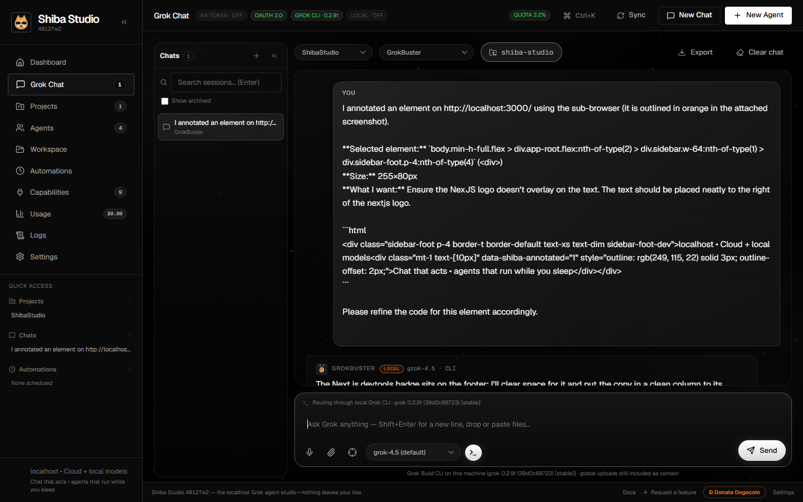
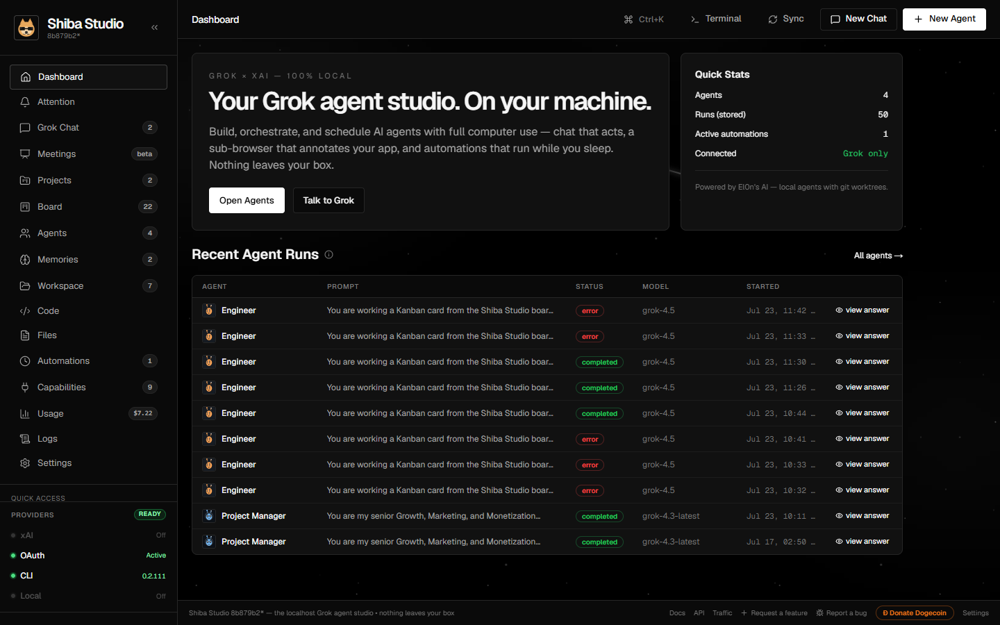
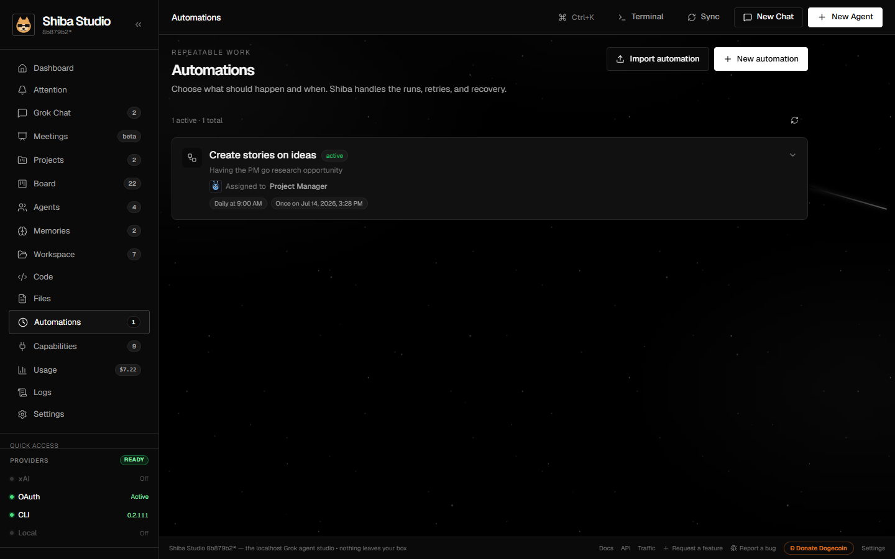

Build, orchestrate, and schedule AI agents with full computer use — chat that acts, a sub-browser that annotates your app, and automations that run while you sleep. Powered exclusively by Grok / xAI. Nothing leaves your box.
git clone https://github.com/stevologic/shiba-studio.git && cd shiba-studio && npm install && npm run dev
Real screenshots from a running install — the demo reel advances on its own.



Everything a frontier chat client does — plus the ability to actually do things.
Streaming reasoning, markdown & code, inline images, multimodal attachments, per-chat workspace folders — and the full slash-command deck with autocomplete:
/git status branch, changed files, recent commits/git checkout <branch> switch to a branch, or create it/git commit <message> stage everything and commit/git pr <title> | <body> push and open a GitHub PR/annotate highlight an element for refinement/workspace <path> bind the chat to a repo/folder/search <query> web search into the conversation/fetch <url> read any page as clean text/remember <key> | <content> save a persistent memory/recall [keyword] list saved memories/note <path> | <content> create an Obsidian note/x <text> post to X through the integration/help the full reference, in chatLoad the app you're building, click any element DevTools-style, and send its selector + HTML + highlighted screenshot into chat for pinpoint code refinement.
Each with its own model, git worktree, integration scopes, skills, peers, and persistent memory. 30+ built-in tools: files, shell, browser, web research, image generation, PRs.
Cron-scheduled runs with live execution traces. Schedules arm at server start — agents keep working with the browser closed. Deleted agents retire their own schedules.
GitHub, Slack, Google Drive, Discord, X, Obsidian, MCP servers, and custom skills. Scoped per-agent — an Obsidian-scoped agent knows its whole vault.
Credentials AES-256-GCM encrypted at rest. Runs, chats, and every action in an embedded SQLite audit log. Zero telemetry — traffic goes only to xAI and services you connect.
/git pr turn "that container looks wrong" into a merged pull request — without leaving chat.Three minutes from clone to a working agent.
Paste an xAI API key, sign in with X (OAuth 2.0), point at a local model server (Ollama, LM Studio), or let it detect the Grok CLI. Readiness badges show what's live.
Talk to Grok with your uploads and projects as context. Open the sub-browser, highlight the exact div that bothers you, and ask for the fix.
Wrap the workflow in an agent, give it scopes and a schedule, and watch live traces on the Automations page — or don't watch; it runs headless either way.
Clone, install, run. Requires Node.js ≥ 22.5 and Git — no native modules, no build tools.
# prerequisites winget install OpenJS.NodeJS.LTS winget install Git.Git # install & run Shiba Studio git clone https://github.com/stevologic/shiba-studio.git cd shiba-studio npm install npm run dev
http://localhost:3000 → Settings → connect your xAI key. Production mode: npm run build && npm run start.# prerequisites brew install node git # install & run Shiba Studio git clone https://github.com/stevologic/shiba-studio.git cd shiba-studio npm install npm run dev
http://localhost:3000 → Settings → connect your xAI key. Production mode: npm run build && npm run start.# prerequisites curl -o- https://raw.githubusercontent.com/nvm-sh/nvm/v0.40.1/install.sh | bash nvm install 22 # install & run Shiba Studio git clone https://github.com/stevologic/shiba-studio.git cd shiba-studio npm install npm run dev
http://localhost:3000 → Settings → connect your xAI key. Production mode: npm run build && npm run start.